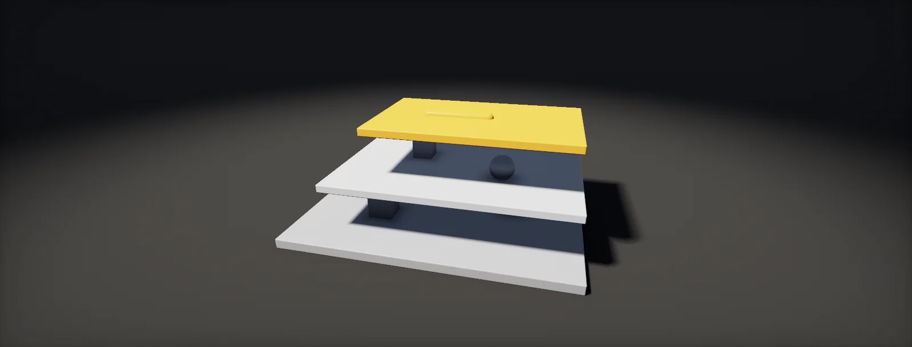

Scene Management
How Unity loads scenes: Single and additive loading, the active scene, loading in the background and the activation hitch, peak memory when switching levels, the bootstrap pattern, references between scenes, and lighting with several scenes loaded.

What a scene is
A scene is a file (.unity) holding a hierarchy of GameObjects with their components, plus the scene's own settings: its lighting settings, its baked lightmaps and probes, its navigation data. Like prefabs, scenes are YAML and refer to assets by GUID (references).
To be loadable by name or index in a build, a scene must be in the build's scene list: File > Build Profiles in Unity 6 (Build Settings in older versions). The scene at index 0 is the one the player starts with. Scenes loaded through Addressables are the exception and must not be in that list (addressable scenes).
All loading goes through SceneManager. A loaded scene is a Scene struct with a name, a path, a build index and its root GameObjects.
Single, additive and the active scene
SceneManager.LoadScene has two modes. Single closes every loaded scene and opens the new one: the classic level change. Additive opens the new scene next to the ones already loaded, and the Hierarchy window shows one section per scene. Additive loading is how larger games are built: a bootstrap scene that never unloads, a UI scene, and level scenes or streaming chunks that come and go.
Exactly one loaded scene is the . New GameObjects (from Instantiate or new GameObject) are created in it, and in URP and the built-in pipeline its lighting settings (skybox, ambient light, fog) apply to all loaded scenes. Set it with SceneManager.SetActiveScene after loading:
Objects that must survive every load can be moved to the special DontDestroyOnLoad scene with DontDestroyOnLoad(gameObject). It works, but every object there needs code that prevents duplicates when its original scene loads again; a bootstrap scene is usually cleaner (the bootstrap pattern).
Loading in the background
LoadScene blocks the game until the scene is loaded. LoadSceneAsync loads in the background and returns an AsyncOperation whose progress goes from 0 to 0.9 while data is read. The last step, activation, runs on the main thread: Unity integrates the objects and calls Awake and OnEnable on every one of them in a single frame. Setting allowSceneActivation = false holds the load at 0.9, so you can finish a fade or wait for the player:
using System.Collections;
using UnityEngine;
using UnityEngine.SceneManagement;
public class LevelLoader : MonoBehaviour
{
public IEnumerator Load(string scene)
{
AsyncOperation op = SceneManager.LoadSceneAsync(scene, LoadSceneMode.Additive);
op.allowSceneActivation = false; // stop at 0.9 until we are ready
while (op.progress < 0.9f) yield return null; // update a loading bar with op.progress here
// ...fade to black, finish the loading screen...
op.allowSceneActivation = true; // activation: Awake/OnEnable of every object
yield return op; // done when isDone is true
SceneManager.SetActiveScene(SceneManager.GetSceneByName(scene));
}
}
Two details catch people. While an operation waits with allowSceneActivation = false, later scene operations queue behind it, including unloads, so do not leave it waiting forever. And the activation frame cannot be split: a scene with tens of thousands of objects or heavy Awake code hitches. Split large levels into several additive scenes, move expensive setup out of Awake into code that runs over several frames, and hide the rest behind a loading screen.
Memory: unloading scenes and their assets
Switching levels raises a memory question: is the old level gone before the new one arrives? With LoadScene in Single mode, Unity loads the new scene and then destroys the old one, so for a moment both are in memory. On a console or phone with a tight budget, that peak is what crashes. A tiny transition scene in between (load it, let the old level go, then load the next) keeps the peak at the larger of the two levels:
With additive scenes you unload explicitly with SceneManager.UnloadSceneAsync. That destroys the scene's GameObjects but does not free the assets they used: textures, meshes and audio stay loaded until Resources.UnloadUnusedAssets runs, which Unity does by itself after a Single-mode load but not after an additive unload. Call it once after unloading a level, ideally behind the loading screen, since it scans all loaded objects and can take a noticeable moment.
The bootstrap pattern
Most projects end up with the same structure:
- A Bootstrap scene at build index 0 holds the systems that live for the whole session: a scene loader, audio, input, save data, the camera rig. It loads first and never unloads.
- The bootstrap loads a UI scene and the first level scene additively, and sets the level active.
- Level changes go through the loader in the bootstrap: show the loading screen, unload the old level, free unused assets, load the new one, activate it, hide the loading screen.
One snag: in the editor you usually press Play in a level scene, and then the bootstrap is missing. A static method marked [RuntimeInitializeOnLoadMethod(RuntimeInitializeLoadType.AfterSceneLoad)] runs right after the first scene has loaded, in the editor and in builds; it can check whether the bootstrap is there and load it additively if not. Level code then must not need the bootstrap in Awake, which is a good rule anyway. The implementation chapter has one.
References between scenes
A field in one scene cannot reference an object in another: Unity does not save , and the Inspector refuses them. That is by design, since the other scene may not be loaded. Systems in different scenes talk in other ways:
- through ScriptableObject assets both scenes reference (a shared settings object, an event channel), since assets are not part of any scene;
- by finding at runtime after a load (
FindAnyObjectByType, a registry that objects join inOnEnable); - by ID: a spawn point stores an ID string, the player looks it up when the level is ready.
Scene names are references too, and fragile ones: LoadScene("Level_02") breaks silently when someone renames the file. Store a reference to the scene asset in the editor and its path in builds, which is what the SceneRef type in the implementation chapter does.
Lighting with several scenes
- Lightmaps belong to the scene they were baked in and load with it. Bake scenes that are shown together while they are open together (multi-scene editing), so their bounce light and shadows agree.
- Light probes from additively loaded scenes have to be merged into one structure. Call
LightProbes.TetrahedralizeAsync()after loading or unloading, or objects keep sampling the old probe set (probes). - Adaptive Probe Volumes (HDRP and URP in Unity 6) bake scenes as a Baking Set, designed for scenes that load together.
- Volumes (HDRP sky, exposure and post, URP post) blend across all loaded scenes by priority. Put the global profile in one place, a lighting or bootstrap scene, and give local overrides a higher priority.
- In URP and the built-in pipeline the environment lighting (skybox, ambient, fog) comes from the active scene, so set the level active after loading it.
Set it up in Unity
A complete bootstrap setup: a scene reference type that survives renames, a loader that swaps levels with a loading screen, frees memory and fixes probes, and a hook that loads the bootstrap when you press Play in any level. Written for Unity 6; Unity 2022 LTS works the same apart from a few renamed menu entries (Build Profiles was Build Settings).
- Create three scenes:
Bootstrap(empty apart from systems),UIand your levels. In File > Build Profiles, add them to the scene list withBootstrapat index 0. - Add
SceneRef.cs,SceneLoader.csandBootstrapper.csto the project (not an Editor folder; they run in builds).SceneRefshows a scene asset field in the Inspector and stores the scene's path for the build. - In the Bootstrap scene, create a GameObject Systems with
SceneLoader. Assign the UI scene and the first level. Add a full-screen loading canvas as a child and assign it to Loading Screen. - Press Play in Bootstrap: it loads UI and the first level additively and makes the level active. Press Play in a level scene instead:
Bootstrappernotices that build index 0 is not loaded and loads it additively, so the systems exist in either case. (The loader then sees the level already open and adopts it.) - Change levels from gameplay code with
SceneLoader.Instance.LoadLevel(nextLevel), wherenextLevelis aSceneReffield. The loader shows the loading screen, unloads the current level, callsResources.UnloadUnusedAssets, loads the next one held at 0.9 until it is ready, activates it, sets it active and rebuilds the light probe structure. - Watch the memory: open Window > Analysis > Profiler, Memory module, and switch levels. The total should fall between levels; if it climbs with each switch, something holds references to old assets (a static list, an event subscription).
- For lighting, bake each level with the Bootstrap and UI scenes closed (they hold no static geometry). Keep the global Volume profile in the Bootstrap scene and level-specific Volumes, with higher priority, in the levels.
using UnityEngine;
// A scene field that survives renames: the editor stores the SceneAsset (by GUID),
// and its current path is copied into a string that builds can load.
[System.Serializable]
public class SceneRef : ISerializationCallbackReceiver
{
#if UNITY_EDITOR
[SerializeField] UnityEditor.SceneAsset scene;
#endif
[SerializeField, HideInInspector] string path = "";
public string Path => path;
public bool IsSet => !string.IsNullOrEmpty(path);
public void OnBeforeSerialize()
{
#if UNITY_EDITOR
path = scene != null ? UnityEditor.AssetDatabase.GetAssetPath(scene) : "";
#endif
}
public void OnAfterDeserialize() { }
}using System.Collections;
using UnityEngine;
using UnityEngine.SceneManagement;
// Lives in the Bootstrap scene. Loads UI and levels additively and swaps levels behind a loading screen.
public class SceneLoader : MonoBehaviour
{
public static SceneLoader Instance { get; private set; }
public SceneRef uiScene;
public SceneRef firstLevel;
public GameObject loadingScreen;
Scene currentLevel;
bool busy;
void Awake()
{
if (Instance != null) { Destroy(gameObject); return; }
Instance = this;
if (loadingScreen) loadingScreen.SetActive(false);
}
IEnumerator Start()
{
if (uiScene.IsSet && !SceneManager.GetSceneByPath(uiScene.Path).isLoaded)
yield return SceneManager.LoadSceneAsync(uiScene.Path, LoadSceneMode.Additive);
// Pressed Play in a level? Adopt it instead of loading the first level.
for (int i = 0; i < SceneManager.sceneCount; i++)
{
var s = SceneManager.GetSceneAt(i);
if (s.buildIndex != 0 && s.path != uiScene.Path) { currentLevel = s; SceneManager.SetActiveScene(s); yield break; }
}
if (firstLevel.IsSet) yield return LoadRoutine(firstLevel.Path);
}
public void LoadLevel(SceneRef level)
{
if (!busy && level.IsSet) StartCoroutine(LoadRoutine(level.Path));
}
IEnumerator LoadRoutine(string path)
{
busy = true;
if (loadingScreen) loadingScreen.SetActive(true);
yield return null; // let the loading screen draw
if (currentLevel.IsValid() && currentLevel.isLoaded)
{
yield return SceneManager.UnloadSceneAsync(currentLevel); // objects gone...
yield return Resources.UnloadUnusedAssets(); // ...and now their assets
}
var op = SceneManager.LoadSceneAsync(path, LoadSceneMode.Additive);
op.allowSceneActivation = false;
while (op.progress < 0.9f) yield return null; // drive a progress bar with op.progress / 0.9
op.allowSceneActivation = true; // one frame of Awake/OnEnable for the whole scene
yield return op;
currentLevel = SceneManager.GetSceneByPath(path);
SceneManager.SetActiveScene(currentLevel); // new objects and environment lighting
LightProbes.TetrahedralizeAsync(); // merge the new level's probes
if (loadingScreen) loadingScreen.SetActive(false);
busy = false;
}
}using UnityEngine;
using UnityEngine.SceneManagement;
// Makes "press Play in any scene" work: if the Bootstrap scene (build index 0) is not loaded, load it.
public static class Bootstrapper
{
[RuntimeInitializeOnLoadMethod(RuntimeInitializeLoadType.AfterSceneLoad)]
static void EnsureBootstrap()
{
for (int i = 0; i < SceneManager.sceneCount; i++)
if (SceneManager.GetSceneAt(i).buildIndex == 0) return; // already there (normal build start)
SceneManager.LoadScene(0, LoadSceneMode.Additive);
}
}SceneRef reads the asset path while serializing, which happens in the editor; in builds only the stored path is used. If you rename a scene, open and save one object that references it (or any scene) once so the stored path updates, and keep the scene in the Build Profiles list.
Sources and further reading
The formulas and engine details in this unit come from these references. Engine documentation changes between versions.
- DocsSceneManagerUnityLoading, unloading and the active scene.
- DocsSceneManager.LoadSceneAsyncUnityAsynchronous loading and its AsyncOperation.
- DocsAsyncOperation.allowSceneActivationUnityWhy progress stops at 0.9 and how activation is held.
- DocsMulti-Scene editingUnityWorking with several scenes, baking them together, cross-scene references.
- DocsResources.UnloadUnusedAssetsUnityFreeing assets no longer referenced by loaded objects.
- DocsLightProbes.TetrahedralizeUnityRebuilding the probe structure after additive loads.
- DocsRuntimeInitializeOnLoadMethodAttributeUnityRunning code before the first scene loads.